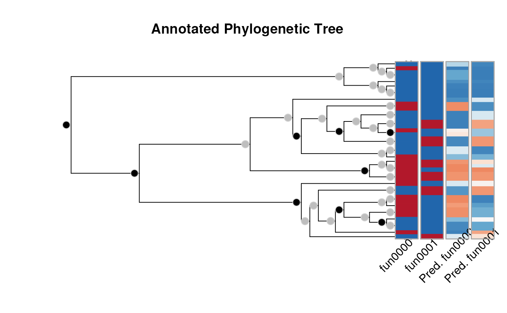

The model fitting of annotated phylogenetic trees can be done using either
MLE via aphylo_mle() or MCMC via aphylo_mcmc(). This section describes
the object of class aphylo_estimates that these functions generate and
the post estimation methods/functions that can be used.
# S3 method for aphylo_estimates
print(x, ...)
# S3 method for aphylo_estimates
coef(object, ...)
# S3 method for aphylo_estimates
vcov(object, ...)
# S3 method for aphylo_estimates
plot(
x,
y = NULL,
which.tree = 1L,
ids = list(1:Ntip(x)[which.tree]),
loo = TRUE,
nsamples = 1L,
ncores = 1L,
centiles = c(0.025, 0.5, 0.975),
cl = NULL,
...
)Depending of the method, an object of class aphylo_estimates.
Further arguments passed to the corresponding method.
Ignored.
Integer scalar. Which tree to plot.
passed to predict.aphylo_estimates()
Logical scalar. When loo = TRUE, predictions are preformed
similar to what a leave-one-out cross-validation scheme would be done
(see predict.aphylo_estimates).
Objects of class aphylo_estimates are a list withh the following elements:
A numeric vector of length 5 with the solution.
A numeric matrix of size counts*5 with the solution path
(length 2 if used optim as the intermediate steps are not available to the
user). In the case of aphylo_mcmc, hist is an object of class
coda::mcmc.list().
A numeric scalar with the value of fun(par, dat). The value of the log likelihood.
Integer scalar number of steps/batch performed.
Integer scalar. Equal to 0 if optim converged. See optim.
Character scalar. See optim.
A function (the objective function).
If specified, the function priors passed to the method.
The data dat provided to the function.
A numeric vector of length 5 with the initial parameters.
Character scalar with the name of the method used.
A matrix of size 5*5. The estimated covariance matrix.
The plot method for aphylo_estimates returns the selected tree
(which.tree) with predicted annotations, also of class aphylo.
The plot method for the object of class aphylo_estimates plots
the original tree with the predicted annotations.
set.seed(7881)
atree <- raphylo(40, P = 2)
res <- aphylo_mcmc(atree ~ mu_d + mu_s + Pi)
#> Warning: While using multiple chains, a single initial point has been passed via `initial`: c(0.9, 0.5, 0.1, 0.05, 0.5). The values will be recycled. Ideally you would want to start each chain from different locations.
#> Convergence has been reached with 10000 steps. Gelman-Rubin's R: 1.0113. (500 final count of samples).
print(res)
#>
#> ESTIMATION OF ANNOTATED PHYLOGENETIC TREE
#>
#> Call: aphylo_mcmc(model = atree ~ mu_d + mu_s + Pi)
#> LogLik: -37.8064
#> Method used: mcmc (10000 steps)
#> # of Leafs: 40
#> # of Functions 2
#> # of Trees: 1
#>
#> Estimate Std. Err.
#> mu_d0 0.8301 0.1659
#> mu_d1 0.5980 0.1568
#> mu_s0 0.1528 0.0715
#> mu_s1 0.0528 0.0289
#> Pi 0.5081 0.3012
#>
coef(res)
#> mu_d0 mu_d1 mu_s0 mu_s1 Pi
#> 0.83010554 0.59795454 0.15277178 0.05277311 0.50811059
vcov(res)
#> mu_d0 mu_d1 mu_s0 mu_s1 Pi
#> mu_d0 0.0275156151 0.0093328072 -0.0024645276 -0.0001701106 0.0005836410
#> mu_d1 0.0093328072 0.0245869092 0.0026286693 -0.0007765479 -0.0030666673
#> mu_s0 -0.0024645276 0.0026286693 0.0051186427 -0.0002880911 0.0033794154
#> mu_s1 -0.0001701106 -0.0007765479 -0.0002880911 0.0008377113 -0.0003115157
#> Pi 0.0005836410 -0.0030666673 0.0033794154 -0.0003115157 0.0907507309
plot(res)
